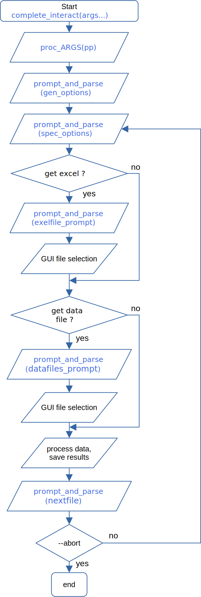
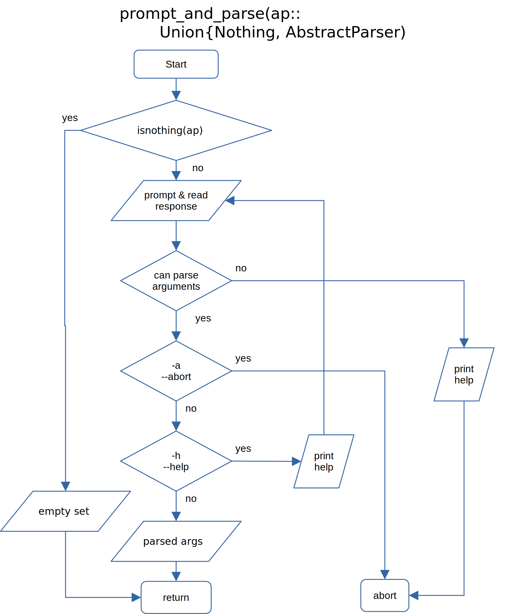

API user interaction
The user interaction API is based on the YAArguParser package.
The both functions proc_ARGS and prompt_and_parse take an ArgumentParser as an argument; they can also be passed Nothing - in this case the corresponding step will be skipped. Please see in our Toy Example for how to implement the user interaction in a typical case.
Flow chart - overview

Flow chart of proc_ARGS() function

Flow chart of prompt_and_parse() function

User julia script
The script to be invoked by the used user can be as short as
using MyBespokePackage
using GivEmXL
complete_interact(pp0, pps, (preproc, procsubset, postproc); getexel=true, getdata=(; dialogtype = :none))For details, see complete_interact documentation and the first of the flow charts above. The parameter pp0 and pps, defining the user interaction, and the functions preproc, procsubset, postproc are to be defined in and exported from your package MyBespokePackage.
Batch scripts
Batch scripts do nothing else but execute Julia in the environment you supplied, with the corresponding julia script.
Any questions?
Please analyze the Toy Examples.